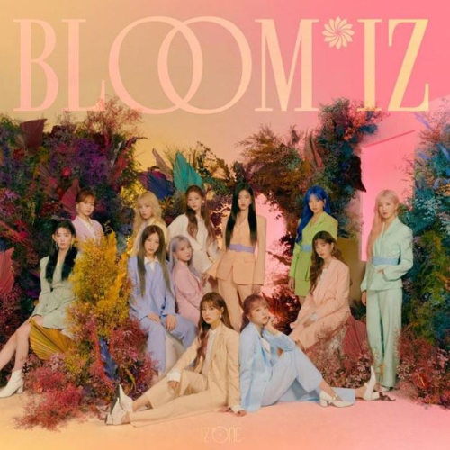

각자 다른 개성과 열정이 모여 절정과 만개를 이룬 아이즈원의 모습을 축제에 비유한 곡으로
후렴구의 가사처럼 뜨거운 태양의 열정을 가득 품어 영원토록 지지 않고 매일 축제를 이어나가겠다는 이야기를 담았다. 리드미컬한 베이스 사운드와 신비로우면서도 강렬한 신스 사운드들이 적절하게 배치된 Future House 스타일의 곡으로 세련된 느낌을 주는 것은 물론 조금 딥하고 비장한 멜로디와 화성 진행에 빠르고 웅장한 사운드가 대비를 이루면서 신선한 매력을 느끼게 하는 곡이다.
2020년 2월 17일 19시 멜론 차트에서 3위로 진입했고,
같은 날 20시 2위까지 상승하며 아이즈원의 실시간 최고 음원 순위를 갱신했다.
2월 18일 기준으로 꾸준히 2~3위를 유지 중이고 이대로만 간다면 발매당시 IZ*ONE의 최대 히트곡이 될 전망이었고 그렇게 되었다.
2020년 2월 18일 10시 기준 아이튠즈 28개 지역에서 TOP10에 진입에 진입하고 15개 지역에서 1위를 했다. 아이튠즈 케이팝 싱글 차트에서는 11개 지역에서 TOP10에, 10개 지역에서 TOP5에 진입하고 6개 지역에서 1위를 차지했다.
2021년 1월 8일 가온차트 연간 디지털종합 부문 52위, 스트리밍 부문 51위,
다운로드 부문 43위에 등극하였으며 지니뮤직 연간 65위에 등극했다.
2021년 2월 9일 멜론 2020년도 종합 연도차트 54위. 2020년 연간 47위(국내곡).